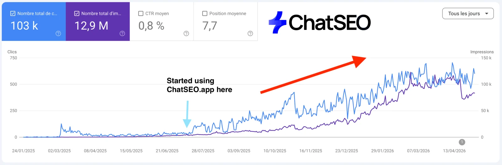
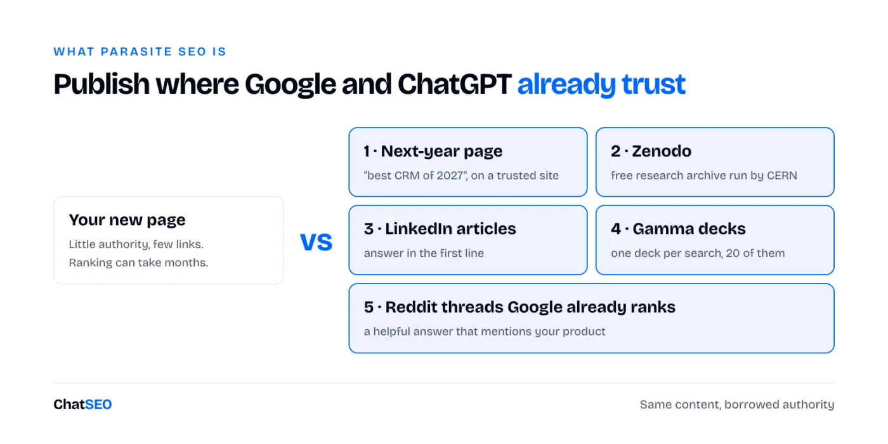
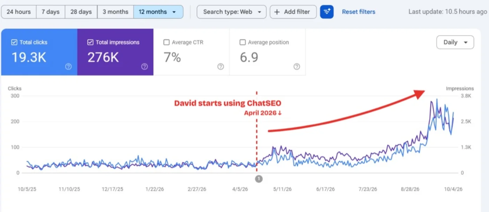
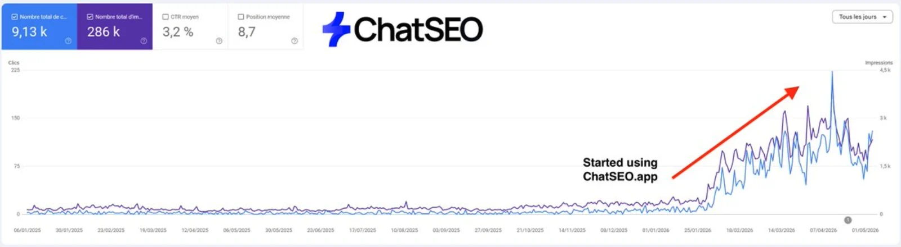
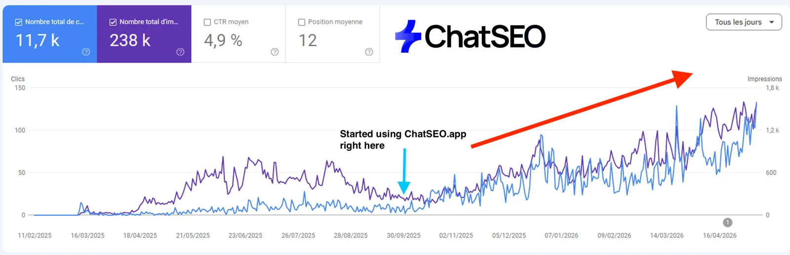
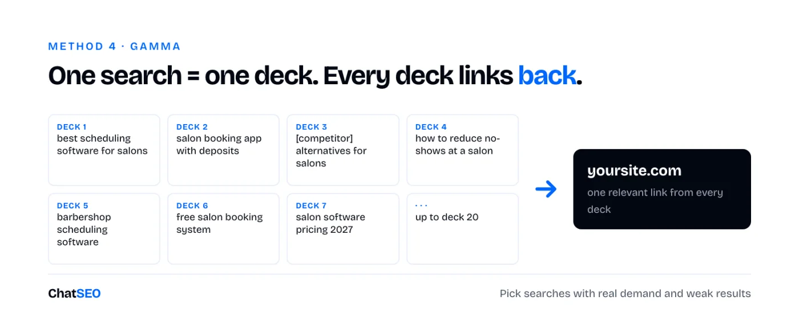
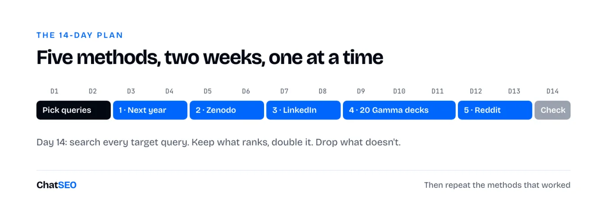

ChatSEO Playbooks / Free, nothing gated
TL;DR

If your own site is too new to rank and you want to be on page one before it is: this is for you.
A new page on a new site can take months to rank. A page on a site Google already trusts can rank in days. Parasite SEO means you publish your content on those sites and borrow their authority, while your own site catches up.
It also works for AI answers. ChatGPT, Perplexity and Google's AI Overviews quote a small set of sources over and over. LinkedIn, Reddit and research archives are in that set.

The one rule. Every piece has to be genuinely useful to the people on that site. Google's site reputation abuse policy targets third-party pages published only to exploit a host's rankings, and Reddit removes promotion. Useful content, real answers, honest mentions of your product. That's what keeps working.
Parasite SEO wins on queries where the current page one is weak: thin pages, old dates, forum threads, no clear answer. Don't guess which ones. Find them first, then point all five methods at the same short list.
Find 20 searches in my market where page one of Google is weak today: outdated years, thin pages, forum threads, or no page that answers the question directly. For each one give me: the query, its monthly search volume, what ranks top 3 today and why it's beatable. Sort by volume. Never invent a volume or a ranking: if you don't have the data, say so.
Keep the 20 queries in the tracking sheet. Every method below reuses them.
Every year, people search "best [category] of [next year]" months before it starts. Right now, almost nothing answers "best CRM of 2027". Whoever publishes a real answer first has page one to themselves for months.
Write an optimised article targeting "best [category] of 2027". Check what ranks today for this query and for the 2026 version first, then cover what those pages miss. Structure: a one-paragraph answer at the top, a comparison table (tool, best for, price, the one reason to pick it), then one section per tool. Include [my product] as one option, judged honestly. Never invent a price, a feature or a statistic: if you can't verify one, leave it out.

Zenodo is a free open research archive run by CERN. Anyone can publish there, every upload gets a DOI, and the pages are indexed. AI assistants like sources that look like research. A short, honest paper with real data can become the source ChatGPT quotes on your topic.
Help me write a short research paper to publish on Zenodo, answering this question: [question]. My data: [describe or paste your data]. Structure: title phrased as the finding, a 120-word abstract that states the answer in its first sentence, method (sample size and how it was collected), results with one table, limits, and conclusion. Use only the numbers I gave you. Never invent a figure, a source or a citation.
No data? Don't fake it. Run a small test first (the same task in five tools, 50 customer answers, a month of your own numbers). A small real sample beats a big invented one.

LinkedIn articles get indexed fast and LinkedIn is one of the domains Google's AI Overviews and ChatGPT cite most. The bar is low: most LinkedIn articles are long opinions with no answer. Yours puts the answer in the first line.
Write a LinkedIn article targeting "[query]". Rules: the first sentence answers the query directly; every subheading is a question people search on Google about this topic; only two heading levels; 600 to 1,200 words; one comparison table if the topic allows it; no links in the body. Then give me a 2-line share post and the first comment linking to [my page URL]. Never invent a statistic.

Gamma decks can be published as public web pages. One deck per long-tail search, twenty of them, each one useful on its own and each linking back to the matching page on your site.

From my site's data, list 20 long-tail searches I could target with one slide deck each: specific queries with real search volume where page one is weak. For each: the query, its monthly volume, the page on my site the deck should link to, and a 6-slide outline (title = the query, slide 2 = the direct answer). Never invent a volume.
Create a 6-slide presentation titled "[query]". Slide 1: the title and one line on who it's for. Slide 2: the direct answer, in two sentences. Slide 3: the options compared in a table ([option], best for, price). Slide 4: how to choose, in 4 bullets. Slide 5: common mistakes, in 3 bullets. Slide 6: "Full guide: [my page title]" with a link to [my page URL]. Plain, factual tone. No invented numbers.
Google shows Reddit threads on page one for a huge number of searches. You can't make a thread rank, but you can answer one that already does. Reddit sent me 30,000 clicks in one month.
For my main keywords, find the Reddit threads Google ranks on page one today. Give me one table: query, position, thread title, subreddit, thread URL, how old it is. Keep only threads still open to replies. Never invent a thread or a ranking.
Read this Reddit thread: [thread URL]. Draft a reply in a natural, first-person tone that answers the original question in the first two sentences, adds one thing the other replies miss, and mentions [my product] once at the end as one option, saying I built it. Under 150 words. No marketing language, no invented numbers.
[Direct answer to the question, 1-2 sentences.] [What actually worked for you, with one concrete detail.] [The trap most people fall into.] Full disclosure, I built [product], which does [one thing]. But [the free way to do it] works fine if you'd rather not pay.
What this page can't do for you. Every method above starts with the same list: the searches where page one is weak, the long-tail queries worth a deck, the Reddit threads Google already ranks for your keywords. A page of instructions can't fetch any of that for your site. ChatSEO reads your Search Console and the live results and gives you the list in one message. The first 7 days are free.

Query | Monthly volume | Method (1-5) | Platform | URL published | Date | Links to (my page) | Position day 7 | Position day 14 | Cited by ChatGPT / AI Overview (y/n) | Clicks to my site | Keep / drop
🎁 If you want to hire your first AI SEO employee (for free), click here.